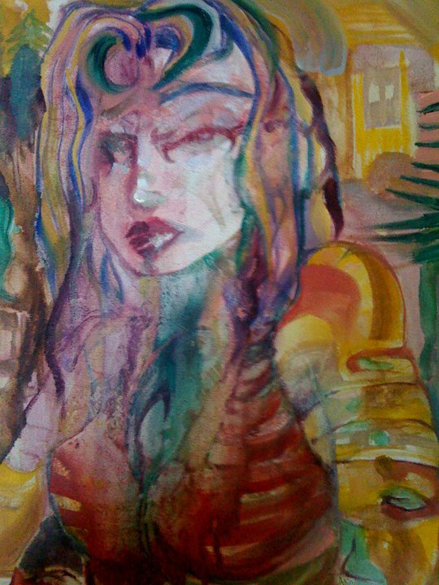
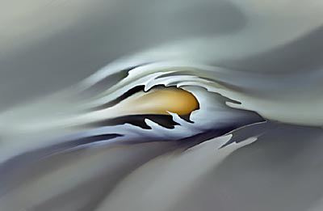
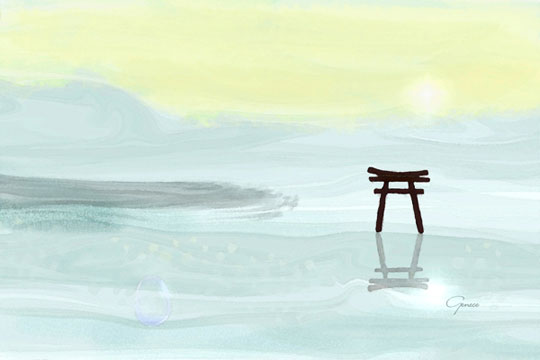
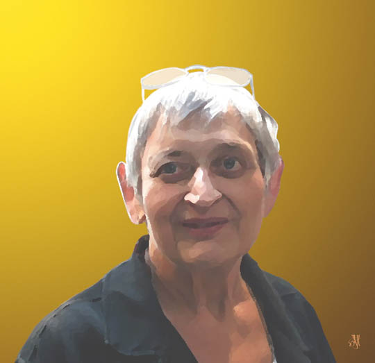
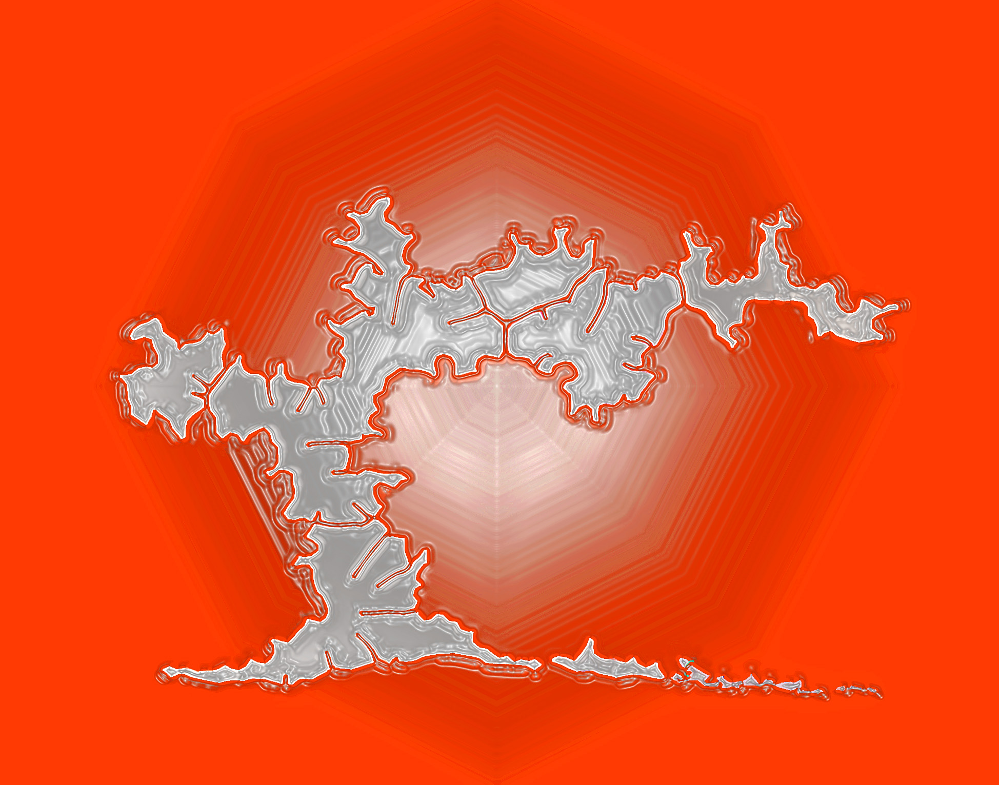
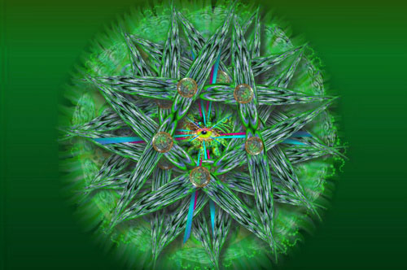
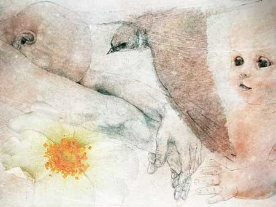
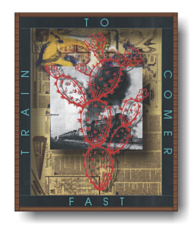
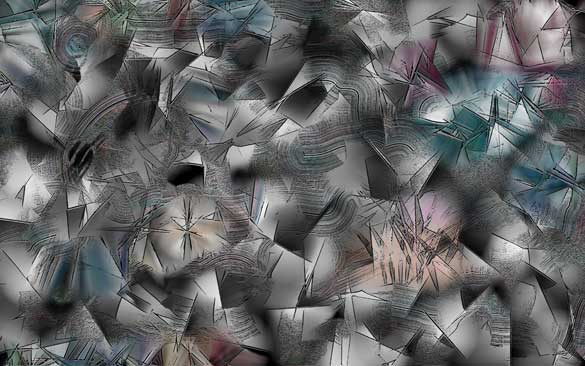

IMAGES OF THE DAY 101
04/01/2024 - 04/10/2024

04/01/2024
Mixed Technique
Realism, Anime and Post-Modern Expressionism
Adriana
by Linka Griswold
Click image to access artist's full exhibit

04/02/2024
Mixed Technique
Digital Paintings
by Hans Dieter Grossmann
Click image to access artist's full exhibit

04/03/2024
Mixed Technique
Sacred Places
Standing in Stillness
by Genece Hamby
Click image to access artist's full exhibit

04/04/2024
Mixed Technique
Portraits
A Face in the Crowd
by John Helgeson
Click image to access artist's full exhibit

04/05/2024
Mixed Technique
Art via the Microscope
BB---23---H---pw--4
by Khang-Loon Ho
Click image to access artist's full exhibit

04/06/2024
Mixed Technique
Mandalas
Mandala a123
by Christopher John Hobby
Click image to access artist's full exhibit

04/07/2024
Mixed Technique
Digital Sketches
Reach
by Bev Hodson
Click image to access artist's full exhibit

04/08/2024
Mixed Technique
The Rachel Boxes
Fast Train
by Larry Hopewell
Click image to access artist's full exhibit
04/09/2024
Mixed Technique
Art as Discovery
Flowers
by John Hughson
Click image to access artist's full exhibit


04/10/2024
Mixed Technique
Donnybrook Number
by JD Jarvis
Click image to access artist's full exhibit